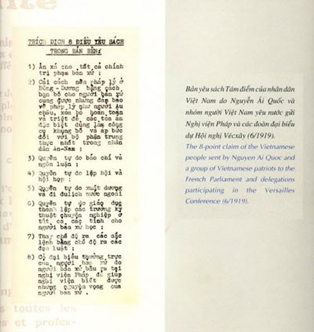

CHƯƠNG II (B)

uy nhiên, cuối cùng Poldes đã khuyến khích Thành nói trước đám đông để xua tan sự rụt rè. Lần đầu tiên, Thành đã rất lo lắng nên đã nói lắp. Mặc dù chỉ có ít người hiểu được những gì Thành nói, họ đã rất thiện cảm với chủ đề của Thành. Khi Thành phát biểu xong, mọi người đã vỗ tay nhiệt liệt. Sau đó Thành đã được mời phát biểu tiếp.[1]
Nguồn tin của Souvarine trùng hợp với nguồn tin của Léo Poldès, người đã nói với nhà văn Mỹ - Stanley Karnow - ông đã gặp Thành lần đầu tiên tại một cuộc họp của câu lạc bộ Faubourg. Ông nhớ lại “Người ta thấy anh giống như danh hài Charles vừa buồn vừa khôi hài”. Poldès có ấn tượng về đôi mắt sáng và sự khao khát hiểu biết những điều xung quanh của Thành. Thành đã vượt qua sự ngại ngùng của mình, tham gia tích cực vào các cuộc bàn luận trong các cuộc họp hàng tuần của câu lạc bộ. Một lần nhân việc chỉ trích quan điểm của một người ủng hộ thuật thôi miên, Thành cho rằng nhà cầm quyền thuộc địa Pháp thường sử dụng thuốc phiện và rượu để thôi miên những người dân ở Đông Dương. Anh bắt đầu làm quen với các nhà lãnh đạo của phong trào cấp tiến và trí thức ở Paris như nhà văn thuộc đảng xã hội - Paul Louis, nhà hoạt động quân sự - Jacques Doriot - và tiểu thuyết gia cấp tiến Henri Barbusse là người có các tác phẩm mô tả sinh động điều kiện cùng cực của các binh lính ngoài mặt trận.[2]
Giờ đây Nguyễn Tất Thành đã gần 30 tuổi. Kinh nghiệm quốc tế rất ít ỏi, mới chỉ ở việc dạy học, nấu ăn và một vài công việc làm thuê. Có lẽ Thành đã gặp rất nhiều khó khăn để tìm được một việc làm ổn định tại Pháp vì Thành không có giấy phép lao động. Có nhiều tài liệu nói rằng Thành từng bán đồ ăn Việt Nam, đeo biển hàng quảng cáo, dạy tiếng Trung Quốc và làm nến. Cuối cùng Thành đã nhận được công việc sửa ảnh, tô màu những bức ảnh đen trắng (công việc phổ biến thời đó), trong cửa hiệu do Phan Chu Trinh quản lý. Lúc rỗi Thành thường tới thư viện Quốc gia hoặc thư viện Sorbon đọc sách. Thành là một người ham đọc và ngoài những tác phẩm của Barbusse, Thành đặc biệt thích những tác phẩm của Shakespeare, Charles Dickens, Victor Hugo, Emile Zola, Léo Tolstoy và Lỗ Tấn. Tài sản của Thành có độc một chiếc va-li và thường xuyên di chuyển từ một quán trọ hay một căn phòng tồi tàn sang một khu khác của người lao động trong thành phố.[3]
Paris sau chiến tranh là một nơi hấp dẫn đối với người châu Á trẻ tuổi quan tâm đến chính trị. Thủ đô của nước Pháp vẫn được coi như trung tâm chính trị, văn hoá của thế giới phương Tây. Nhiều nhân vật cấp tiến nổi tiếng của thế kỷ XIX sống và hoạt động tại Paris. Sự hung tàn của cuộc chiến vừa qua tiếp thêm sinh lực cho những người kế thừa tư tưởng cấp tiến tiếp tục cuộc khẩu chiến chống lại hệ thống tư bản chủ nghĩa. Dọc theo tả ngạn sông Seine, trí thức, sinh viên Pháp và thế giới thường tập trung trong các quán cà phê, nhà hàng thảo luận về vấn đề chính trị và vạch kế hoạch cho các cuộc cách mạng. Trong đó một số người được bí mật tuyển mộ làm mật thám cho Pháp để theo dõi các đồng nghiệp của mình, báo cáo lại bất kỳ hoạt động lật đổ nào cho cảnh sát.
Sau chiến tranh, cộng đồng người Việt đông đảo nhất trong số các cộng đồng sống lưu vong tại Paris. Khi chiến tranh kết thúc, có khoảng năm mươi nghìn người Việt tại Pháp. Đa số họ làm việc tại các nhà máy, nhưng có vài trăm người là du học sinh, con các gia đình giàu có. Do bầu không khí chính trị sôi động trong cộng đồng trí thức ở Pháp, những sinh viên này đã đủ độ chín muồi tham gia những cuộc vận động về chính trị. Tuy tinh thần dân tộc rất mạnh mẽ trong người Việt sống tại Pháp, nhưng có rất ít cuộc vận động biến tinh thần đó thành sự nghiệp đấu tranh giành độc lập. Trong chiến tranh, Pháp khẳng định, bổn phận của công dân các nước dưới đế chế thuộc địa là phải bảo vệ mẫu quốc. Thật bất ngờ, một số chiến sĩ nòng cốt lại cho rằng, phải đổi sự ủng hộ người Pháp ở Châu Âu bằng tăng quyền tự trị, thậm trí còn đòi độc lập hoàn toàn cho Việt Nam sau chiến tranh. Nhiều người còn đi xa hơn nữa, thân với gián điệp Đức, hy vọng sự thất bại của Pháp sẽ phá bỏ bộ máy cai trị ở nước ngoài, dẫn tới việc lật đổ chính quyền thuộc địa.
Hình như người Pháp có bằng chứng Phan Chu Trinh và cộng sự Phan Văn Trường, nên đã tìm cách kiểm tra cả hai. Sinh năm 1878 tại Hà Đông gần Hà Nội, ông Trường được đào tạo trở thành luật gia, định cư tại Pháp từ năm 1910, đã trở thành công dân có quốc tịch Pháp. Trước khi xảy ra chiến tranh, ông Trường và ông Trinh thành lập Hội Người Việt Nam Lưu Vong. Ông Trinh, người đầy lý tưởng nổi trội, nhưng chưa bao giờ biểu lộ có quyền lực lớn trong tổ chức chính trị. Hội Ái Hữu thành lập - một tổ chức không được sự ủng hộ rộng rãi của người Việt trong và ngoài Paris - chỉ có khoảng 20 thành viên, hầu như không hoạt động gì. Tuy nhiên người ta đồn rằng - tin này được cơ quan mật thám Pháp coi là thật - hai người đã ngấm ngầm tổ chức một phong trào nhằm thúc đẩy một cuộc tổng nổi dậy ở Việt Nam. Chính vì vậy ngay khi chiến tranh bùng nổ, họ bị giam giữ trong thời gian ngắn do bị nghi ngờ đã tham gia các hoạt động tạo phản. Chính vì họ bị bắt nên những bức thư của Thành đã rơi vào tay của nhà cầm quyền. Sau khi được trả tự do, Trinh và Trường tránh không đối đầu với chính quyền thuộc địa ở Đông Dương, và phải một thập niên sau thì mới có người đưa ra được thách thức đối với chính quyền. Có thể người Pháp đã có những hành động ngăn chặn hiệu quả hoặc vì thiếu năng lực, cộng đồng người Việt tại Pháp hầu như chẳng làm được gì trong thời gian chiến tranh để thúc đẩy sự nghiệp dành độc lập dân tộc. Trên thực tế, cộng đồng người Việt Nam đã dậm chân tại chỗ về chính trị.
Thành đã nhanh chóng làm thay đổi tình hình. Mãi đến năm 1919, mặc dù đã làm quen được với một vài nhân vật quan trọng trong phong trào chống thuộc địa của Việt Nam, thành tích chính trị của Thành mới chỉ làm phiên dịch trong cuộc biểu tình của nông dân Huế. Bề ngoài không gây được ấn tượng, ăn mặc xuềnh xoàng, vì thế những người dân qua lại chẳng ai để ý đến Thanh. Tuy nhiên, bạn bè nhớ lại, Thành có một đặc điểm đặc biệt chứng tỏ anh không phải là một con người bình thường - đôi mắt đen rực sáng, mỗi khi nói chuyện dường như Thành có sức thuyết phục đi sâu vào tâm hồn người nghe. Một người quen thậm chí nhận xét, tính mãnh liệt của Thành làm cho vợ anh ta e sợ.
Mùa hè đó, được hai đồng sự lớn tuổi đồng ý, Thành đã lập một tổ chức mới của người Việt Nam sống tại Pháp; Hội Những Người Yêu Nước An Nam. Vì Thành chưa được nhiều người biết tới, ông Trinh và Phan Văn Trường trong danh sách là những người lãnh đạo của tổ chức, nhưng Thành, với tư cách là thư ký, hiển nhiên là người lãnh đạo. Những hội viên ban đầu của tổ chức là những người trí thức, nhưng người ta kể rằng Thành đã sử dụng những mối liên hệ của mình để chiêu mộ một số người lao động Việt Nam, trong đó có một số thủy thủ ở các cảng biển Toulon, Marseilles và Le Havre.[4]
Bề ngoài, Hội không theo đuổi các mục tiêu cấp tiến. Thực ra, những người sáng lập hội đã hy vọng tránh các mục tiêu này để có thể giành được sự ủng hộ rộng lớn của cộng đồng người Việt và tránh bị nhà chức trách nghi ngờ. Việc dùng từ “An Nam” thay cho từ “Việt Nam” trong tên gọi của hội có lẽ là một thông điệp gửi tới chính quyền là Hội sẽ không tạo ra một mối nguy hiểm thực sự cho chính quyền thuộc địa.
Nhưng ngay mới thành lập hội, Thành đã có ý định biến hội trở thành cộng đồng người Việt nam trực tiếp chống lại chế độ thuộc địa ở Đông Dương. Anh đã thường xuyên liên hệ với các nhóm thuộc quốc gia khác như Hàn Quốc, Tunisia… họ cũng thành lập những tổ chức tương tự và tìm cách giành độc lập trong tay chính phủ thuộc địa.
Thành lập các tổ chức như vậy khi đó là thích hợp. Sau Thế chiến I, Paris trở thành trung tâm vận động thế giới của các nhóm chống thực dân. Các cuộc tranh luận về chủ nghĩa thực dân diễn ra thường xuyên trong Quốc hội Pháp. (Trong một bài phát biểu tại Hà Nội tháng 4-1918, nhà hùng biện Albert Sarraut - Toàn quyền Đông Dương, được giữ chức vụ này lần thứ hai trong một thời gian ngắn - đã hứa, nhân dân Việt Nam sẽ sớm được thấy các quyền của mình được mở rộng về chính trị). Vấn đề này cũng được nêu ra vào tháng 1-1919 khi các nhà lãnh đạo các cường quốc Đồng Minh thắng trận họp tại điện Versailles để thương lượng thoả ước hoà bình với các lực lượng bại trận và đưa ra các nguyên tắc điều phối quan hệ quốc tế sau chiến tranh. Tổng thống Mỹ, Woodrow Wilson, đã khích lệ tinh thần các dân tộc dưới ách thuộc địa trên toàn thế giới bằng việc đưa ra Tuyên Bố Mười Bốn Điểm nổi tiếng, trong đó kêu gọi trao quyền tự quyết cho tất cả các dân tộc.
Vào đầu mùa hè, một số tổ chức của những người theo chủ nghĩa dân tộc có trụ sở tại Paris đã phát hành các bản tuyên ngôn, công khai cho mọi người biết mục tiêu của mình. Thành và các đồng sự trong Hội Những Người Yêu Nước An Nam đã quyết định tranh thủ thời cơ đưa ra một bản yêu sách. Với sự hỗ trợ của Phan Văn Trường về tiếng Pháp, Thành đã soạn yêu cầu 8 điểm, kêu gọi các nhà lãnh đạo đồng minh tại Versailles vận dụng ý tưởng của Tổng thống Wilson vào các vùng thuộc địa của Pháp ở Đông Nam Á. Với tiêu đề “Yêu sách của nhân dân An Nam”. Bản yêu sách có thái độ ôn hoà, không đề cập độc lập dân tộc nhưng yêu cầu quyền độc lập chính trị cho người Việt Nam, quyền tự do dân chủ cơ bản như quyền lập hội, tự do tín ngưỡng, tự do báo chí, tự do đi lại, ân xá cho các tù nhân chính trị, bình đẳng giữa người Việt Nam và người Pháp ở Việt Nam, bãi bỏ chế độ lao dịch, các loại thuế cao đánh vào muối, thuốc phiện và rượu. Bản yêu sách đề ngày 18-6-1919, tác giả của bản yêu sách là Nguyễn Ái Quốc, 56 đường Monsieur-le-Prince dưới danh nghĩa Hội Những Người Yêu Nước An Nam. Cho dù đối với một độc giả Việt Nam, cái tên Nguyễn Ái Quốc chỉ là biệt danh có nghĩa là “Nguyễn yêu nước” thì không ai biết ai là của tác giả ngoài nhóm đồng sự của ông.
Đã có nhiều tranh luận diễn ra giữa những người viết tiểu sử về Hồ Chí Minh và những người nghiên cứu lịch sử hiện đại Việt Nam về việc liệu Nguyễn Tất Thành có phải là tác giả của bản yêu sách đó không hay đó là nỗ lực chung của một số thành viên trong nhóm người Việt tại căn hộ của Phan Chu Trinh trong biệt thự Villa des Gobelins. Nhà chức trách Pháp lúc đó rất bối rối; họ chưa bao giờ biết tới cái tên đó. Một số phỏng đoán, tác giả thực sự chính là Phan Văn Trường người được coi là “thế lực ma quỷ” đứng đằng sau nhóm và là thành viên khôn ngoan nhất. Tuy nhiên, trong hồi ký của mình, Hồ Chí Minh đã xác nhận rằng ông chính là tác giả “bản yêu sách” mặc dù ông cũng xác nhận Phan Văn Trường đã giúp ông soạn thảo yêu sách bằng tiếng Pháp để dễ hiểu.[5]
Cho dù Thành có là tác giả bản yêu sách hay không có lẽ không quan trọng bằng việc Thành là người chịu trách nhiệm chính công bố bản yêu sách. Vài tháng sau, người ta đã xác minh được tên Nguyễn Ái Quốc, một biệt danh Thành sử dụng với niềm kiêu hãnh trong ba thập niên sau. Thành đã tự tay chuyển bản yêu sách tới các thành viên quan trọng trong Quốc hội và tới Tổng thống Pháp, Thành cũng đã đi dọc các hành lang trong cung điện Versailles để gửi bản yêu sách tới các phái đoàn của các cường quốc lớn. Để đảm bảo bản yêu sách phát huy hết tác dụng, Thành đã thu xếp xuất bản bản yêu sách trên báo Nhân Đạo, một tờ báo cấp tiến ủng hộ chủ nghĩa xã hội. Thành cũng tranh thủ sự ủng hộ của các thành viên của Tổng Liên đoàn Lao động để in thêm sáu nghìn bản và phân phát trên các đường phố Paris.[6]

Bản yêu sách đã không nhận được hồi âm chính thức từ phía nhà chức trách Pháp. Mặc dù vấn đề thuộc địa vẫn là chủ đề chính vẫn được tranh luận tại Quốc hội và cũng đã gây ra nhiều tranh cãi trong Hội nghị hoà bình Versailles, và khi kết thúc hội nghị những người tham gia hội nghị đã không đưa ra được một hành động cụ thể để giải quyết vấn đề. Đại tá House, cố vấn cao cấp của Tổng thống Wilson trong phái đoàn Hoa Kỳ tại Versailles, đã trả lời ngắn gọn thư của Nguyễn Ái Quốc, thông báo đã nhận được thư và cảm ơn tác giả đã gửi thư nhân dịp thắng lợi của đồng minh. Lá thư thứ hai ngày hôm sau chỉ nói rằng thư của Nguyễn Ái Quốc có thể được trình cho Tổng thống Wilson xem xét. Từ đó không thấy phái đoàn Hoa Kỳ trao đổi lại về vấn đề này. Trên thực tế, Woodrow Wilson đã gặp phải sự chống đối quyết liệt đối với tuyên bố mười bốn điểm của mình tại Versailles, buộc phải nhượng bộ để đạt được một hiệp định hoà bình, một quyết định đã gây tức giận và thất vọng trên toàn thế giới thuộc địa.[7]
Tuy nhiên, bản yêu sách đã gây hoảng sợ trong giới chức Paris. Ngày 23-6 Tổng thống Pháp gửi thư cho Albert Sarraut, nay đã trở lại Paris sau khi hết nhiệm kỳ làm Toàn quyền Đông Dương, nói rằng ông đã nhận được bản yêu sách, yêu cầu Sarraut nghiên cứu vấn đề và tìm hiểu tác giả bản yêu sách. Tháng tám năm đó, viên Thống sứ Bắc Kỳ đã gửi điện về Paris thông báo rằng yêu sách đã được rải khắp các đường phố Hà Nội và được báo chí địa phương bình luận. Đến tháng chín, Thành đã chấm dứt những phỏng đoán về tác giả của bản yêu sách, bằng công khai nhận mình là Nguyễn Ái Quốc trong cuộc trả lời nhà báo Mỹ làm việc cho một tờ báo của Trung Quốc đóng tại Paris. Tuy nhiên, Thành làm như vậy mà không tiết lộ tên thật của mình. Cũng trong thời gian đó, Thành đã làm quen với Paul Arnoux, một cảnh sát có nhiệm vụ theo dõi các hoạt động của người Việt Nam nhập cư ở Paris. Khi dự một buổi nói chuyện của một viện sĩ người Pháp từng chỉ trích chính sách thuộc địa ở Đông Dương, Arnoux đã nhìn thấy một người đàn ông trẻ sôi nổi đang phân phát những tờ truyền đơn. Sau vài lần nói chuyện trong một quán cà-phê gần nhà hát Opera, Arnoux đã liên lạc với Bộ Thuộc địa và gợi ý Albert Sarraut thu xếp gặp anh ta.
Ngày 6-9, Thành được Bộ Thuộc địa nằm trên đường Oudinot triệu đến phỏng vấn trong khi đó mật vụ hoạt động trong cộng đồng người Việt Nam lưu vong đã chụp ảnh Thành và bắt đầu dò la tin tức về tên thật của Thành.[8]
Rất khó biết, liệu Nguyễn Ái Quốc, như Thành thường xưng như vậy, thực sự hy vọng những yêu sách về công lý và quyền tự quyết cho nhân dân Việt Nam sẽ được đáp lại, hay Nguyễn Ái Quốc chỉ dựa vào tác động của bản yêu sách để truyền bá sự nghiệp chống chủ nghĩa thực dân và cấp tiến hoá cộng đồng người Việt ở Pháp.
Không thể không cho rằng Nguyễn Ái Quốc lúc đầu đã hy vọng bản yêu sách của mình có thể đem lại những thay đổi tích cực ở Đông Dương. Nguyễn Ái Quốc lạc quan và dường như luôn tin tưởng vào những điều tốt đẹp nhất của con người kể cả kẻ thù của mình. Thái độ đó không chỉ giành cho đồng bào của Nguyễn Ái Quốc, hay ngay cả cho những người châu Á, mà còn cho cả những người châu Âu. Trong một chuyến đi ngắn ngày tới Đức, Thuỵ Sĩ và Italy trong khoản thời gian này, Nguyễn Ái Quốc đã nói với một người bạn rằng: “Tất cả đều là con người. Mọi nơi chúng ta đều gặp những người tốt và những người xấu, thật thà và dối trá. Nếu chúng ta là người tốt chúng ta sẽ gặp được những người tốt ở khắp mọi nơi”, Nguyễn Ái Quốc tin rằng chính mối quan hệ thuộc địa đã làm mất phẩm chất và làm đồi bại bản chất con người. Tuy nhiên, Nguyễn Ái Quốc đã rất thất vọng vì yêu sách của mình không được đáp ứng. Một thập niên sau Nguyễn Ái Quốc đã phàn nàn với các cộng sự của mình rằng nhiều người đã thất vọng vì “bài ca quyền tự do” của Woodrow Wilson.
Cũng có thể là như những người Việt Nam khác, Thành đã bị những lời lẽ của viên Toàn quyền Albert Sarraut thuyết phục. Trong cuộc phỏng vấn của Thành với ký giả Hoa Kỳ của tờ tạp chí Trung Quốc “Ích Dạ Báo” vào tháng chín, Thành đã phàn nàn về những điều kiện tồi tệ tại Đông Dương, nhưng thừa nhận rằng bước đi đầu tiên là đạt được quyền tự do ngôn luận giáo dục người dân và sau đó phấn đấu cho quyền tự trị và độc lập dân tộc.[9]
Tuy vậy, có bằng chứng cho thấy sự kiên nhẫn và lạc quan của Thành chỉ tồn tại trong một thời gian ngắn. Ngày hôm sau cuộc phỏng vấn với Sarraut, Thành đã gửi cho Sarraut một bản sao yêu sách với thư kèm theo có nội dung:
“Như chúng ta đã trao đổi ngày hôm qua, tôi xin gửi ngài bản yêu sách. Bởi ngài đã nói với tôi rằng ngài sẵn sàng nói chuyện thẳng thắn nên tôi mạnh dạn yêu cầu ngài cho chúng tôi biết tám yêu sách của chúng tôi đã được giải quyết như thế nào… Bởi tôi cho rằng tám yêu cầu đó vẫn chưa được giải quyết, không có yêu cầu nào được giải quyết thoả đáng.
Tôi xin gửi tới Ngài Toàn quyền lời chào trân trọng.
Nguyễn Ái Quốc”[10]
Vài ngày sau, hai mật vụ được giao nhiệm vụ theo dõi mọi mọi hành động và hoạt động chính trị của Nguyễn Ái Quốc. Đến 12, Nguyễn Ái Quốc đã tạm thời được xác định là Nguyễn Tất Thành, con trai của viên quan bị cách chức Nguyễn Sinh Sắc và cũng là người đàn ông trẻ đang lẩn trốn từng bị trục xuất khỏi trường Quốc Học Huế vì các hoạt động nổi loạn năm 1908.
Bất kể động cơ trong việc công bố và vận động thực hiện yêu sách là gì, Nguyễn Ái Quốc đã làm mọi người biết đến sự nghiệp phấn đấu cho quyền tự quyết của người Việt Nam. Tin tức về yêu sách đã nhanh chóng lan rộng trong cộng đồng người Việt ở Pháp và đã tác động mạnh đến đồng bào của ông. Những người yêu nước cao tuổi rất ngạc nhiên vì sự táo bạo của người thợ sửa ảnh trẻ tuổi. Những người trẻ hơn thì biểu lộ thái độ nhiệt tình hăng hái trong sự nghiệp đấu tranh. Những người thận trọng hơn thì cho rằng Nguyễn Ái Quốc là người “cuồng ngôn” và bắt đầu lảng tránh Nguyễn Ái Quốc. Họ rỉ tai nhau, “ta có thể trông cậy gì vào một con trâu ương ngạnh xứ Nghệ?”.
Thất vọng về những yêu sách đòi độc lập dân tộc đã khiến rất nhiều trí thức yêu nước ở các nước thuộc địa ở châu Á và châu Phi theo đuổi chính trị cấp tiến. Rất có thể Hồ Chí Minh cũng không phải là một ngoại lệ, rõ ràng ông đã quan tâm tới chính trị chủ nghĩa xã hội trước khi soạn thảo yêu sách. Việc tham gia vào các hoạt động công đoàn khi sống ở Anh đã tạo ra những mối liên hệ giúp ông trở thành người hoạt động tích cực trong các tổ chức tương tự ngay sau khi ông đến Pháp. Michel Zecchini, đảng viên Đảng Xã hội Pháp, đã gặp Nguyễn Tất Thành vào cuối Thế chiến I và nhận thấy Thành đã quen biết với những nhân vật có ảnh hưởng lớn của Đảng Xã hội Pháp như Marcel Cachin, Paul Vaillant-Couturier, Léon Blum, Edouard Herriot, Henri Barbusse và Jean Longuet - cháu ngoại của Karl Marx. Qua các đầu mối của Đảng Xã hội Pháp, cuối cùng Thành đã có được các giấy tờ tùy thân và giấy phép lao động. Tuy nhiên, theo Michel Zecchini, Thành chưa được công nhận là đảng viên chính thức của Đảng Xã hội Pháp cho tới khi Thành chứng tỏ mình là Nguyễn Ái Quốc vào tháng 6-1919. Là tác giả của bản yêu sách nổi tiếng, đồng chí Nguyễn - hay ông Nguyễn như đôi khi người ta gọi - rất được mọi người kính trọng.
Hồ Chí Minh có lẽ được những người theo chủ nghĩa xã hội chú ý tới vì, theo ông, họ “đồng cảm với tôi, với cuộc đấu tranh của các dân tộc bị áp bức”. Đồng thời, khuynh hướng tư tưởng của ông thiên về chủ nghĩa xã hội có thể được nhìn nhận như kết quả tất yếu của việc ông căm ghét chủ nghĩa tư bản và chủ nghĩa đế quốc. Như nhiều người châu Á khác, kinh nghiệm đầu tiên của ông về hệ thống tư bản chủ nghĩa là kết quả của sự bóc lột của bọn thực dân trên đất nước ông đã gây ra những hậu quả tàn khốc đối với cuộc sống của nhiều đồng bào ông. Quan điểm đó càng được củng cố trong những năm tháng ông lênh đênh trên biển, từ hải cảng này đến hải cảng khác trên khắp thế giới thuộc địa và có lẽ trong cả thời gian sống ở Anh và Mỹ. Nhiều năm sau đó ông thường chỉ trích bản chất bóc lột của chủ nghĩa tư bản Mỹ, mặc dù đôi khi ông biểu lộ sự thán phục đối với tính năng động và khả năng của người Mỹ. Có thể là, giống như những người theo chủ nghĩa dân tộc châu Á khác, sự quan tâm ban đầu của ông tới chủ nghĩa xã hội là kết quả của việc phát hiện ra sự tương phản giữa chủ nghĩa xã hội và chủ nghĩa tư bản.[11]
Tuy nhiên, khuynh hướng của những người theo Chủ Nghĩa Dân Tộc Á Châu thiên về chủ nghĩa xã hội không thể hoàn toàn quy về vì động cơ cá nhân. Đối với nhiều trí thức Á châu, nguyên tắc xử thế của những người theo chủ nghĩa xã hội phương Tây phù hợp với những quan điểm họ thừa hưởng hơn là của những người theo chủ nghĩa cá nhân với nguyên tắc xử thế dựa trên lợi nhuận của chủ nghĩa tư bản phương Tây. Và không ở đâu điều này được thể hiện rõ như trong xã hội Nho giáo Trung Quốc và Việt Nam. Người Trung Quốc và Việt Nam theo chủ nghĩa dân tộc xuất thân từ những gia đình quý tộc Nho giáo thường nhìn thấy cảnh hào nhoáng của những thành phố thương mại mới một cách khó chịu mơ hồ. Theo cách suy nghĩ của những người Nho giáo, nền công nghiệp phương Tây dễ dàng sinh ra thói tham lam và tự phụ. Ngược lại chủ nghĩa xã hội chú trọng nỗ lực cộng đồng, lối sống giản dị, đồng đều về của cải và cơ hội. Tất cả những điều này có tác động mạnh tới đời sống Nho giáo. Trong bối cảnh đó, sự chuyển đổi về mặt triết học từ Khổng Tử sang Marx dễ hơn nhiều sang Adam Smith và John Stuart Mill - những người luôn coi trọng chủ nghĩa thực dụng và cá nhân chủ nghĩa - không phù hợp với người châu Á.[12]
Năm 1920, ông Nguyễn bắt đầu thường xuyên tham dự các cuộc họp của Đảng Xã hội Pháp và Tổng Liên đoàn Lao động cũng như của Liên đoàn nhân quyền, (một tổ chức không giống như Hội Quyền tự do dân sự Mỹ) - và đóng một vai trò tích cực hơn trong các cuộc tranh luận chính trị. Tuy nhiên, có nhiều dấu hiệu cho thấy ông đã bắt đầu khó chịu với thái độ của các đồng sự. Đối với Nguyễn Ái Quốc, vấn đề cốt lõi của thời đại là các dân tộc thuộc địa bị chủ nghĩa đế quốc phương Tây bóc lột. Ông phát hiện ra, đối với hầu hết những người Pháp ông quen, -chủ nghĩa thực dân chỉ là một mặt của vấn đề lớn hơn - đó là chủ nghĩa tư bản thế giới. Marx có thiên hướng lấy châu Âu làm trung tâm cuộc vận động và hầu hết những người theo Marx ở châu Âu đã đi theo hướng của ông. Sau cùng, thuộc địa đã đem lại sự giàu có cho nước Pháp và việc làm cho công nhân Pháp. Chính vì vậy, ông Nguyễn nhận được rất ít sự ủng hộ khi nêu ra các vấn đề thuộc địa tại các cuộc họp chính trị. Điều này dẫn tới việc trong cơn thất vọng ông đã to tiếng với một đồng sự “Nếu như anh không tố cáo chủ nghĩa thực dân, nếu như anh không đứng về phía các dân tộc thuộc địa, làm sao anh có thể làm cách mạng được?”
Chia rẽ nghiêm trọng đã xảy ra trong hàng ngũ phong trào chủ nghĩa xã hội giữa những người lãnh đạo ôn hoà như Jean Longuet, Léon Blom và những người cứng rắn hơn như Marcel Cachin, Paul Vaillant-Couturier là những người dường như có quan điểm cấp tiến hơn về tương lai xã hội loài người. Nguyễn Ái Quốc đứng về phía những người cấp tiến. Một trong những vấn đề mà hai phe có quan điểm khác nhau là cuộc cách mạng Bolsevich. Nhóm cứng rắn chủ trương hành động đảng phải thống nhất, ủng hộ một số sáng kiến quan trọng: phản đối dàn xếp hoà bình Versailles; thành lập phong trào chủ nghĩa xã hội quốc tế mới tiến bộ hơn (năm 1889, Quốc tế thứ nhất của Marx được thay thế bằng Quốc tế thứ hai ôn hoà hơn nhằm tiến tới chủ nghĩa xã hội thông qua con đường nghị viện), đồng cảm với các dân tộc bị áp bức ở thuộc địa và tích cực ủng hộ cách mạng Bolsevich. Cuối năm 1919, Đảng Xã hội Pháp đã thành lập một ủy ban ủng hộ Quốc tế III mới của Lenin có lập trường nghiêng về việc cần phải tiến hành bạo lực cách mạng và thành lập chuyên chính vô sản. Nguyễn Ái Quốc đã đóng một vai trò tích cực trong các hoạt động đó và thường tham dự các cuộc họp nhằm quyên góp tiền bảo vệ cách mạng Xô viết trước kẻ thù tư bản chủ nghĩa.
Nguyễn Ái Quốc vẫn còn thiếu kinh nghiệm về chính trị cấp tiến thế giới. Một số đồng sự của ông trong những năm đầu đó kể lại, “Lúc đó Nguyễn Ái Quốc hầu như không biết gì về lý thuyết hay về sự khác biệt giữa Quốc tế thứ Hai và Quốc tế thứ Ba”. Có lần Nguyễn Ái Quốc đã đề nghị Jean Longuet giải thích về chủ nghĩa Marx. Longuet lưỡng lự và nói rằng câu hỏi quá phức tạp, gợi ý Nguyễn Ái Quốc đọc bộ “Tư bản” của Marx. Sau đó Nguyễn Ái Quốc đã tới một thư viện gần Quảng trường Place d'Italie để mượn tác phẩm đồ sộ đó để đọc cùng với một số tác phẩm Marxist khác. Sau này trong cuốn tự thuật của mình ông kể lại rằng ông đã dùng cuốn Tư bản làm gối đầu giường.
Tuy nhiên, chính tác phẩm nổi tiếng của Lenin “Luận cương về các vấn đề Dân tộc và Thuộc địa” gửi cho Đại hội Quốc tế Cộng sản II mùa hè năm 1920 đã khiến cho Nguyễn Ái Quốc từ một người yêu nước đơn thuần đến với thiên hướng xã hội chủ nghĩa trở thành một người cách mạng Marxist. Trong một bài báo viết cho một nhà xuất bản Liên Xô năm 1960, Nguyễn Ái Quốc đã xác nhận, trong các cuộc tranh luận giữa những người ủng hộ Quốc tế thứ Hai và thứ Ba trong Đảng Xã hội Pháp ông đã “không thể hiểu được hết” diễn biến của các cuộc tranh luận. Sau này, vào giữa tháng bảy năm 1920, một người đã đưa cho ông bản “Luận Cương” của Lenin trên báo Nhân đạo. Ông kể lại việc này một cách sôi nổi:
“Luận cương có những thuật ngữ chính trị rất khó hiểu, tuy nhiên, khi đọc đi đọc lại cuối cùng tôi đã hiểu được ý chính của bản luận cương. Sự xúc động, nhiệt huyết, tầm nhìn rộng và niềm tin của bản luận cương đã thấm đẫm trong tôi. Tôi mừng phát khóc. Mặc dù ngồi một mình trong phòng tôi đã nói to như đang phát biểu trước công chúng: Đồng bào ơi! Đây là cái chúng ta cần, đây chính là con đường giải phóng chúng ta”.
Ngay sau đó, ông đã gửi một bức thư cho Ủy ban Đoàn kết với Quốc tế III yêu cầu được kết nạp. Đơn xin gia nhập của ông đã được chấp thuận.[13]
Bỏ qua vấn đề ý thức hệ tạp nham, thông điệp của Lenin rất đơn giản và rõ ràng. Trong cuộc đấu tranh nhằm lật đổ hệ thống tư bản chủ nghĩa ở các nước công nghiệp phát triển, các đảng cộng sản ở phương Tây cần phải phối hợp chặt chẽ với các phong trào của những người theo chủ nghĩa dân tộc ở các thuộc địa tại châu Á và châu Phi. Lenin cho rằng nhiều trong số các phong trào này do tầng lớp trung lưu cầm lái và về lâu dài tầng lớp này sẽ không ủng hộ cách mạng xã hội. Do đó, bất kỳ sự liên minh nào với các nhóm của những người theo chủ nghĩa dân tộc thuộc giai cấp tư sản cần phải được tiến hành một cách thận trọng và chỉ với điều kiện, các đảng cộng sản địa phương phải duy trì được bản sắc riêng của mình và được tự do hành động. Mặc dù có những hạn chế như vậy, Lenin cho rằng các phong trào giải phóng dân tộc ở châu Á và châu Phi là liên minh tất yếu, dù chỉ là tạm thời, của những người cộng sản chống lại kẻ thù chung là chủ nghĩa đế quốc trên thế giới. Chính việc các nước tư bản chủ nghĩa phương Tây tìm kiếm thị trường và tài nguyên ở các nước kém phát triển đã duy trì và tránh được sự sụp đổ hoàn toàn của hệ thống tư bản chủ nghĩa trên thế giới.
Ách thống trị đế quốc tại các thuộc địa không những trì hoãn ngày cách mạng xã hội tiêu diệt bất công và bất bình đẳng tại phương Tây, mà còn ngăn chặn sự trỗi dậy của các lực lượng tiến bộ trong các xã hội châu Á và châu Phi. Tầng lớp tư sản trong nước bị ngăn cản không được đóng một vai trò tích cực trong sự phát triển công - thương nghiệp do sự thống trị của chủ nghĩa đế quốc phương Tây đem lại, cho nên giai cấp tư sản địa phương vẫn còn yếu và chưa phát triển; do vậy giai cấp tư sản không thể thực hiện được vai trò tiến bộ của mình trong việc tiến hành cách mạng tư sản chống lại các thế lực phong kiến trong xã hội là bước đầu cần thiết dẫn tới chủ nghĩa cộng sản trên thế giới. Giai cấp tiểu tư sản ở các nước thuộc địa cần đến sự giúp đỡ của các lực lượng tiến bộ khác - như tầng lớp nông dân nghèo và giai cấp vô sản ở thành thị còn mỏng nhưng đang lớn mạnh - để lật đổ chế độ phong kiến và mở cửa phát triển thương mại và công nghiệp.
Trên thực tế, Lenin kêu gọi những người cộng sản ở các nước phương Tây sát cánh với những người theo chủ nghĩa dân tộc ở châu Á và châu Phi trong sự nghiệp cách mạng chung. Liên minh này chỉ là tạm thời; khi chủ nghĩa đế quốc và các đồng minh phong kiến trong các xã hội kém phát triển bị lật đổ, phong trào cộng sản cần phải tự tách mình khỏi liên minh với các lực lượng chính trị tư sản lúc này ngày càng trở nên phản động, và cần phải đấu tranh để tiến tới giai đoạn thứ hai của cuộc cách mạng, giai đoạn xã hội chủ nghĩa.
Lenin đã đề nghị giúp đỡ nhân dân Việt Nam và các dân tộc khác khi họ đang rất cần. Lenin đã thể hiện rất rõ quan điểm - đây cũng là cốt lõi đối với thế giới quan của Nguyễn Ái Quốc - cho rằng các khu vực thuộc địa là một tuyến phòng thủ quan trọng của hệ thống tư bản trên thế giới. Mất đi những cái vòi bạch tuộc của chủ nghĩa thực dân ở các thuộc địa rộng lớn, hệ thống tư bản có thể bị lật đổ.
Những người theo chủ nghĩa xã hội ở Paris, trừ một số ít người, đều có xu hướng nói mà không làm. Lenin không phải là một nhà lý thuyết mà là một con người hành động. Đối với Nguyễn Ái Quốc, Lenin là một người gây cảm hứng đặc biệt và là người đáng để ông phụng sự.
Chú thích:
[1] Boris Souvarine, “Nguyễn Ái Quắc chính là Hồ Chí Minh”, tạp chí Đông Tây (Paris) 1-15 tháng 3-1976, trang 567-568. Souvarine người đầu tiên tham gia và sau đó đã rời bỏ phong trào cộng sản, cuối cùng lại trở thành người chỉ trích Hồ Chí Minh cay nghiệt nhất
[2] Karnow mô tả trong cuộc phỏng vấn của ông với Léo Poldès “Paris trong những năm năm mươi” (NXB Random, New York, 1997) trang 216-217. Đồng thời ông cũng đề cập đến việc Thành quan tâm đến chủ nghĩa thần bí, trong một lần ông đã đấu khẩu với Emily Coue “có một công thức để tự hoàn thiện mình nằm trong câu thần chú được lặp đi lặp lại “Ngày ngày tôi nhận thấy tôi tốt hơn trong cách hành xử”. Xem Hồng Hà, “Thời niên thiếu của Bác Hồ”, trang 78 và Karnow trang 217. Có thể Thành đã viết cho tạp chí điện ảnh và đã làm đơn xin ra nhập Hội Tam Điểm
[3] Gaspard, “Hồ Chí Minh ở Paris”, trang 76. Thật khó theo dõi hoạt động của ông trong giai đoạn đầu khi ông trở lại Pháp. Theo một số nguồn tin, ông sống phố Charonne, gần Place de la Basitille, sau đó chuyển đến thuê chung căn hộ với anh chàng người Tunisi, những nhanh chóng chuyển đi nơi khác vì bị theo dõi. Cho đến nay tôi kiểm chứng được, địa chỉ đầu tiên ông ở tại hotel nhưng rất ngắn (bây giờ là Hotel President Wilson) số 10 phố Stockholm vào khoảng đầu tháng 6-1919. Nơi ấy tiếp giáp gần với ga St. Lazare có thể cho thấy ông vừa trải qua một chuyến đi. Xem “Hồ Chí Minh biên niên tiểu sử”, tập I, trang 65, trích báo cáo mật của cảnh sát Pháp. Theo nguồn tài liệu khác, xem Nguyễn Thanh, “Chủ tịch Hồ Chí Minh ở Pháp” (NXB Thông tin Lý luận, 1988), trang 34; Toàn Tập I, Tập I, trang 545 và Gaspard, “Hồ Chí Minh ở Paris”, trang 71-73
[4] Chính quyền Pháp cho rằng chính Phan Văn Trường mới là người chủ mưu của “Hội người An Nam yêu nước”, còn Nguyễn Tất Thành chỉ là người thực hiện, nhưng sau này họ tập trung theo dõi Thành sát sao hơn. Xem Bộ thuộc địa, số 1735, ngày 5-12-1919, trong SPCE, hộp 364, CAOM. Tổ chức này gọi theo Việt ngữ là “Hội những người Việt nam yêu nước”
[5] Gaspard, “Hồ Chí Minh ở Paris”, trang 64-65; Với Bác Hồ, trang 33; “Hồ Chí Minh” của Hemery, trang 44. Khu nhà ở phố Monsieur-le-Prince ngày nay là Hotel thời trang Le Clos Médicis. Người quản lý hotel không có tài liệu ghi việc ông ta đến thuê buồng, mặc dù khu nhà này được xác định trước đây là khách sạn ở thời điểm đó. Có thể nơi đây là nơi tạm trú cho các sinh viên Sorbonne. Trong đơn thỉnh cầu, Thành dùng chữ “Quắc”, nhưng nhanh chóng thay tên “Quốc” phổ biến hơn
[6] Kobelev, “Hồ Chí Minh”, trang 31, kể lại, Thành bấm chuống cửa nhà Jules Cambon, một đại biểu của phái đoàn Pháp ở Versailles. Xem thêm Hồng Hà, “Thời niên thiếu của Bác Hồ”, trang 70-71. Nguồn tài liệu gần đây cho biết khi Phan Chu Trinh và Phan Văn Trường vừa trở về sau chuyến sang Đức khi đơn khiếu lại được chuyển đi đã nổi giận với Thành vì đã phát triển quan điểm cấp tiến. Một số cho rằng Thành không phải là Nguyễn Ái Quốc, xem Huy Phong và Yến Anh, “Nhận diện Hồ Chí Minh: thực chất gian manh của huyền thoại anh hùng”, trang 22. Thực tế cho thấy, Thành chính là tác giả khi đăng quảng cáo xuất hiện ở báo địa phương của Pháp như tờ Đời sống Người lao động (La vie Ourrière) từ năm 1918 nhận sửa ảnh với cái tên Nguyễn Ái Quốc (xem ghi chú 16 ở phần trên). Tôi chưa hề nhìn thấy bản quảng cáo này
[7] Bản tiếng Việt cả hai bức thư trong Hồ Chí Minh biên niên tiểu sử, Tập I, trang 67. Xem thêm Hồng Hà, “Thời niên thiếu của Bác Hồ”, trang 65-68
[8] Jean Lacouture, “Hồ Chí Minh: Tiểu sử một chính trị gia”, trang 23. Hàng loạt các sự kiện xảy ra đã giúp chính phủ Pháp xác định ra Thành từ những tài liệu không rõ ràng trong kho lưu trữ. Các báo cáo của cảnh sát đôi khi mơ hồ và mâu thuẫn. Thí dụ, ngày anh đến Pháp. Sở Mật thám vẫn chưa biết chính xác về những hoạt động của Thành ở Anh trong thời gian chiến tranh, xem Toàn quyền Đông Dương (GGI) bộ trưởng Bộ thuộc điạ, 20-10-1919, trong SPCE, hộp 364, CAOM
[9] Trích Gaspard, “Hồ Chí Minh ở Paris”, trang 68-69. Theo một mật vụ, bí danh “Edouard”, người quen biết Thành. Nguyễn Ái Quốc nói chung đã được Albert Sarraut phê duyệt. Xem Giải mã hồ sơ mật, 20-12-1919, trong SPCE, hộp 364, CAOM. Những nhận xét về Woodrow Wilson, xem tài liệu 5-3-1930 ông báo cáo Quốc tế Cộng sản trong Văn kiện Đảng toàn tập, Tập II, 1930 (Hà nội, NXB Chính trị quốc gia, 1998), trang 31
[10] Nguyễn Ái Quốc gửi Toàn quyền Đông Dương Albert Sarraut, ngày 7-9-1919, SPCE, hộp 364, CAOM
[11] Một số nhà nghiên cứu đã cố gắng xác định ngày chính xác ông tham gia Đảng Xã hội Pháp. Theo Gaspard, “Hồ Chí Minh ở Paris”, trang 73; “Chủ tịch Hồ Chí Minh” của Nguyễn Thanh, “Chủ tịch Hồ Chí Minh ở Pháp”, trang 43, không có người Việt nào trong đảng năm 1918. Nhưng năm sau có 80 đảng viên người Việt tham gia Đảng Xã hội Pháp vào năm 1918. Trích đoạn chương mở đầu trong cuốn “Con đường dẫn tôi đến với Chủ nghĩa Lenin” của Hồ Chí Minh, bài báo đầu tiên được viết vào tháng 4-1960 cho tạp chí Liên Xô “Những vấn đề Phương Đông” trong Bernard Fall, ed., “Hồ Chí Minh trong Cách mạng: Tuyển tập 1920-1966”, trang 23-25
[12] Tôi đã thảo luận vấn đề này kỹ càng trong “Con đường Cộng sản lên nắm quyền ở Việt Nam” xuất bản lần thứ 2, trang 26-29. Xem thêm câu trả lời thú vị của Nguyễn Khắc Viện trong “Truyền thống và Cách mạng Việt Nam” (Berkeley, California & Washington, DC, 1974) trang 15-74
[13] Kobelev, “Hồ Chí Minh”, trang 44. Trích Bernard Fall, ed., “Hồ Chí Minh trong Cách mạng: Tuyển tập 1920-1966”, trang 24. Với nhận xét trước đó của Jacques Duclos, xem Hồng Hà, “Thời niên thiếu của Bác Hồ”, trang 84. Sự ủng hộ đầu tiên cho Bolsevich, xem “Thông tin khác” trong SPCE, hộp 365, CAOM. Có ý kiến cho rằng tư tưởng của ông còn ngây thơ, xem Gaspard, “Hồ Chí Minh ở Paris”, trang 113-115, và Nguyễn Thanh, “Chủ tịch Hồ Chí Minh ở Pháp”, trang 52